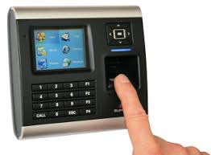

The most basic definition of any security system is found in its name. It is literally a means or method by which something is secured through a system of interworking components and devices.
We’re talking about home security systems, which are networks of integrated electronic devices working together with a central control panel to protect against burglars and other potential home intruders.
- Home security systems work on the simple concept of securing entry points into a home with sensors that communicate with a control panel or command center installed in a convenient location somewhere in the home.
- The sensors are typically placed in doors that lead
to and from a house as well as easily accessible windows. Open spaces inside of homes can be secured with motion sensors. - Control Panel: The control panel is the computer that arms and disarms the security systems. They typically feature a touchpad for easy programming and interaction.
- Motion Sensors: These security components, when armed, protect a given space by creating an invisible zone that cannot be breached without sounding an alarm. These are typically used to protect rooms containing valuables, as well as areas less frequented in larger homes.
.jpg)
- Pros are: Helps to prevent Burglaries and Break-ins by robbers.
- It avoids lockout situations. Since modern locking systems do not require a pair of keys and cards for locking mechanism, thus it avoids lockout situations.
- Police are immediately dispatched if someone breaks into your home. How it works: you get a phone call when the alarm system is set off.
- If you don’t answer the phone, provide a security code, and tell them you’re okay, they will immediately send someone out to your home.
Cons:
- You can get a false sense of security, since some burglars will still enter the home with an alarm on. Not all burglars will be scared away. There are professional criminals who know how to get in, grab what they want, and get out before the police ever arrive.
- You have to remember to set the alarm in order for it to work. If you fall asleep before locking up the house and setting the alarm, the home security system will not do you any good.
- Your local police department will charge you for “false alarms.” Any time they come out to your home to find no burglar there and no obvious signs of forced entry, it will be considered a false alarm. So basically, you can be fined if your security alarm was successful in scaring the intruder away.